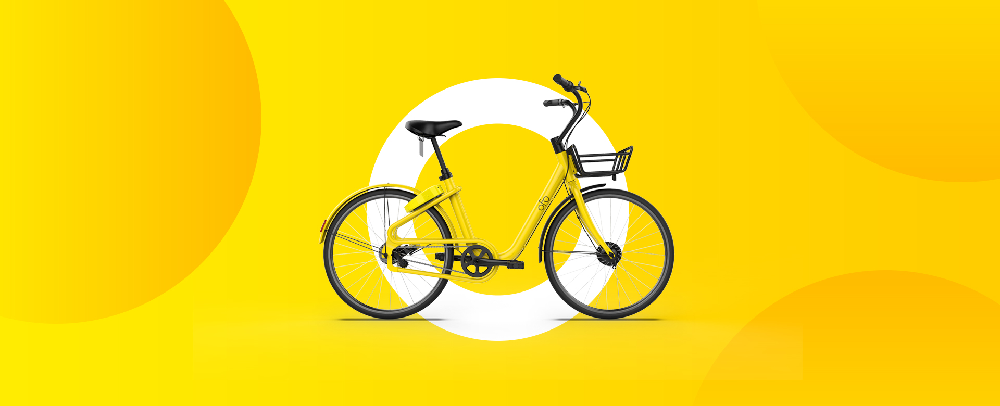

ofo小黄车首创“单车共享”模式是全球第一个无桩共享平台
在校园
ofo 萌起校园，直至 2016 年 10 月，已来到全国22座城市、200 多所高校，累计提供超过 4000 万次共享单车
出行服务， 目前已成为中国规模最大的校园交通代步解决方案，为广大高校师生提供便捷经济、绿色低碳、
更高效率的校园共享单车服务。
在城市
低效率的出行状况已经无法满足快节奏的城市生活，两点一线的生活半径和不断加速的城市改造，
让外来人融不进来，也让原住民忘了城市本来的样子，
正因如此，ofo 共享单车怀揣“随时随地有车骑”的朴素愿景来到城市，试图满足人们短途代步的需求，
更用这辆单车，重新丈量人们经过的每一条路线，找寻与城市的全新连接方式。
在未来
ofo 以开放平台和共享精神，欢迎用户共享自己的单车加入 ofo，以互联网创新模式调动城市单车存量市场，
提高自行车使用效率，为城市节约更多空间；
在未来， ofo 希望不生产自行车，只连接自行车，让人们在全世界的每一个角落都可以通过 ofo 解锁自行车，
随时随地有车骑，满足短途代步的需求。